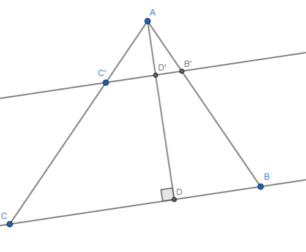

Problema 1
Dado el segmento \(\overline{AD}\), construir un paralelogramo \(ABCD\) tal que \( \hat{C} = 75^\circ\)
Problema 2
Dado un segmento \(\overline{AQ}\), construir un triángulo equilátero \( \Delta ABC\) tal que \( \overline{AQ}\) es la altura del triángulo.
Problema 3
Dado el segmento \(\overline{RQ}\), construir un triángulo \(\Delta ABC\) tal que:
- \(\hat{A} = 60^\circ\)
- \(\overline{AB} = 4\overline{RQ}\)
- \(\overline{AC} = 3\overline{RQ}\)
Problema 4

Supongamos que \(\overline{AB} = a \in \mathbb{R} \) y que el área de \(AB'C' = b \in \mathbb{R}\). Además:
- \(\overline{AB} = 3\overline{AC}\)
- \(\overline{C'C} = \frac{7}{9}\overline{AB}\)
- El area de \(\Delta AB'C' = b\)
- \(\overline{D'D} = \frac{4}{3}\overline{AC'}\)
1)¿Cuanto vale el área de \(\Delta ABC\) en términos \(b\)?
2) cuando mide \overline{CB} en términos de \(a\) y \(b\)?
Problema 5
Supongamos que nos dan el segmento \(\overline{AB}\), dos numeros \(x\) e \(y\) y dos segmentos que miden \(x\overline{AB} \) e \(y\overline{AB}\) respectivamente.
- Construir un segmento que mida \((x \cdot y) \overline{AB} \)
- Construir un segmento que mida \((\frac{y}{x}) \overline{AB} \)
Problema 6
Sea \(\mathcal{C}\) una circunferencia dada.
- Encontrar su centro y llamarlo \(O\)
- Construir un construir un triángulo equilátero tal que todos los vertices de este estén sobre la circunferencia.
Problema 7
Sea \( \Delta ABC \) un triángulo dado. Construir uno semejante \( \Delta PRQ \) tal que la razon entre sus lados sea \( \frac{1}{3} \)
Problema 8
Dada una unidad de medida \(\overline{AB} = 1\)
1) construir un dodecágono regular de lado \(\sqrt{5}\) (el dodecágono tiene 12 lados)
2) Construir un dodecágono regular de radio \(sqrt{2}\)
Problema n
Dada una unidad de medida \(\overline{AB} = 1\)
- Construir un rombo con una diagonal de medida \(\sqrt{2}\) y área \(\sqrt{6}\) (Recordar que el área es \(\frac{d\cdot D}{2}\))
- Construir un rombo \(RSPQ\) de lado \(\sqrt{7}\) tal que \(\hat{R} = 120^\circ\)
Problema n
Dado el segmento \(\overline{AD}\) construir un cuadrilátero \(ABCD\) tal que:
- \(\hat{D} = 90^\circ\)
- \(\overline{AD} = \overline{AB} = \overline{CD} \)
- \(\overline{BC} = \frac{2}{3}\overline{AD}\)